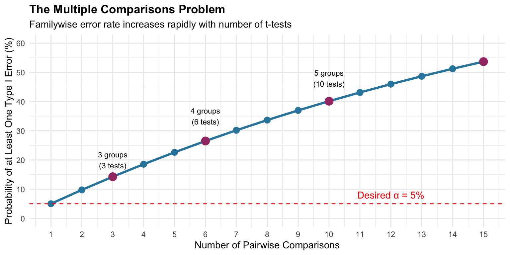
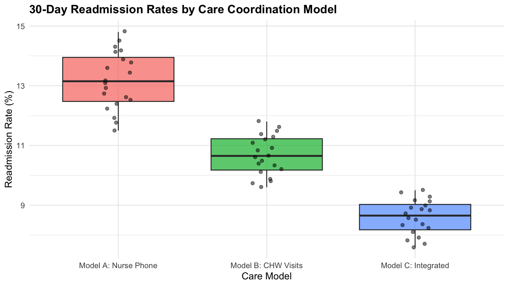
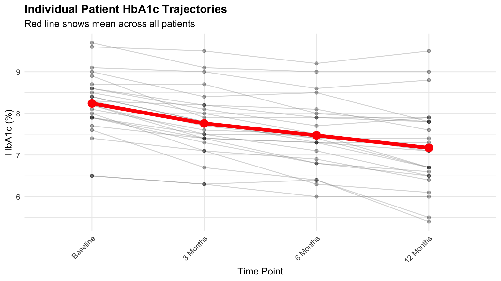
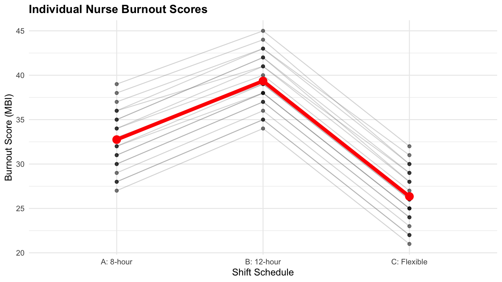

A hospital administrator wants to compare patient satisfaction across four departments (e.g., emergency, cardiology, orthopedics, oncology). The means range from 7.5 to 8.3—are these differences real or just random variation?
A key question we need to understand is:
Can we compare all four departments simultaneously while controlling for false positives?
This is exactly what ANOVA helps us answer!
Why ANOVA Matters
While t-tests compare two groups, ANOVA extends this to three or more groups.
ANOVA determines whether differences across multiple groups are statistically significant
It does this in a single test, avoiding the problems of running multiple t-tests
Why not just run multiple t-tests?
Because the familywise error rate inflates rapidly!
Familywise error rate: The probability of making at least one Type I error (false positive) across all comparisons in a set of tests.
The Multiple Comparisons Problem

The Multiple Comparisons Problem
The familywise error rate for \(c\) independent comparisons at significance level \(\alpha\):
\[\alpha_{family} = 1 - (1 - \alpha)^c\]
Example: With 4 groups, you need \(\binom{4}{2} = 6\) pairwise t-tests:
contrast estimate SE df t.ratio p.value
Cardiology - Emergency 0.480 0.17 76 2.826 0.0300
Cardiology - Oncology -0.140 0.17 76 -0.824 0.8428
Cardiology - Orthopedics 0.235 0.17 76 1.384 0.5135
Emergency - Oncology -0.620 0.17 76 -3.650 0.0026
Emergency - Orthopedics -0.245 0.17 76 -1.442 0.4773
Oncology - Orthopedics 0.375 0.17 76 2.208 0.1304
P value adjustment: tukey method for comparing a family of 4 estimates
Interpreting Tukey’s HSD Output
Each row shows a pairwise comparison:
contrast: Which two groups are being compared
estimate: Difference between group means
SE: Standard error of the difference
t.ratio: Test statistic
p.value: Adjusted p-value (controlling for multiple comparisons)
Decision rule: If p.value < 0.05, those groups are significantly different.
Practice 1: Staff Training Programs
A hospital compares three training programs (Traditional, Simulation, Blended) for nurse medication safety scores (out of 100). These scores assess nurses’ competency in safe medication handling, including correct dosage identification, drug interaction awareness, and proper administration procedures.
The Research Question we have is: Do the three training programs result in different medication safety competency scores?
Practice 1: Staff Training Programs
Load the dataset using the code below.
# Load Training program Datatraining_data <-read.csv("https://raw.githubusercontent.com/mba642-spring-26/mba642-spring-26.github.io/refs/heads/main/datasets/week06_training_data.csv")
Create a boxplot to visualize the data.
# Fill in the blanks to create a boxplotggplot(___, aes(x = ___, y = ___, fill = ___)) +geom_boxplot(alpha =0.7) +geom_jitter(width =0.1, alpha =0.5) +labs(title ="Medication Safety Scores by Training Program",x ="Training Program", y ="Safety Score (out of 100)") +theme_minimal() +theme(legend.position ="none",plot.title =element_text(face ="bold"))
Practice 1: Staff Training Programs
Run ANOVA and post-hoc tests.
# Fill in the blanks (replace ___ with appropriate values)# Step 1: Run ANOVAanova_training <-aov(___ ~ ___, data = training_data)summary(___)# Step 2: Post-hoc testsemm_training <-emmeans(___, ~ ___)pairs(___, adjust ="tukey")
Question: Which training program is most effective?
Example 2: Comparing Care Coordination Models
Three care coordination models for managing chronic conditions:
Model A: Nurse-led telephone follow-up
Model B: Community health worker home visits
Model C: Integrated care team with digital monitoring
Question: Do 30-day readmission rates differ across models? (lower is better)
Example 2: Data and Visualization
Let’s load the dataset and create a boxplot to visualize the data.
# Load 30-day readmission rates (%) by care coordination modelreadmission_data <-read.csv("https://raw.githubusercontent.com/mba642-spring-26/mba642-spring-26.github.io/refs/heads/main/datasets/week06_readmission_data.csv")
Code
ggplot(readmission_data, aes(x = model, y = rate, fill = model)) +geom_boxplot(alpha =0.7) +geom_jitter(width =0.1, alpha =0.5) +labs(title ="30-Day Readmission Rates by Care Coordination Model",x ="Care Model", y ="Readmission Rate (%)") +theme_minimal() +theme(legend.position ="none",plot.title =element_text(face ="bold"))

Example 2: Hypotheses and ANOVA
Let’s run one-way ANOVA to test our hypotheses.
Hypotheses:
\(H_0\): All three models have equal mean readmission rates (\(\mu_A = \mu_B = \mu_C\))
\(H_A\): At least one model’s mean readmission rate is different from the others
# Perform ANOVAanova_readmit <-aov(rate ~ model, data = readmission_data)summary(anova_readmit)
Df Sum Sq Mean Sq F value Pr(>F)
model 2 209.91 104.95 183.3 <2e-16 ***
Residuals 57 32.63 0.57
---
Signif. codes: 0 '***' 0.001 '**' 0.01 '*' 0.05 '.' 0.1 ' ' 1
Example 2: Post-Hoc
As we found a significant difference in means, let’s perform post-hoc tests to identify which models are significantly different.
contrast estimate SE df t.ratio p.value
Model A: Nurse Phone - Model B: CHW Visits 2.50 0.239 57 10.448 <0.0001
Model A: Nurse Phone - Model C: Integrated 4.58 0.239 57 19.120 <0.0001
Model B: CHW Visits - Model C: Integrated 2.08 0.239 57 8.672 <0.0001
P value adjustment: tukey method for comparing a family of 3 estimates
Example 2: Interpretation
Key findings from Tukey’s HSD:
All three pairwise comparisons are statistically significant
Model C (Integrated) has the lowest readmission rates
Model B (CHW Visits) significantly outperforms Model A (Nurse Phone)
Conclusion: More comprehensive care coordination → lower readmissions
Practice 2: Hospital Operating Costs
Compare cost per discharge ($, the total cost of a patient’s entire hospital stay from admission to discharge) across four hospital types:
Academic Medical: Large teaching hospitals; complex care and research
Community: General hospitals serving local populations
Critical Access: Small rural hospitals (≤25 beds)
Specialty: Focused on specific areas (e.g., cardiac, orthopedic)
The Research Question we have is: Do operating costs per discharge differ significantly across hospital types?
Practice 2: Hospital Operating Costs
Load the dataset using the code below.
# Load Cost per discharge by hospital typecost_data <-read.csv("https://raw.githubusercontent.com/mba642-spring-26/mba642-spring-26.github.io/refs/heads/main/datasets/week06_operating_cost.csv")
Create a boxplot to visualize the data.
# Fill in the blanks to create a boxplotggplot(___, aes(x = ___, y = ___, fill = ___)) +geom_boxplot(alpha =0.7) +geom_jitter(width =0.1, alpha =0.5) +labs(title ="Cost per Discharge by Hospital Type",x ="Hospital Type", y ="Cost per Discharge ($)") +theme_minimal() +theme(legend.position ="none",plot.title =element_text(face ="bold"))
Practice 2: Hospital Operating Costs
Run ANOVA and post-hoc tests.
# Fill in the blanks (replace ___ with appropriate values)# Step 1: Run ANOVAanova_cost <-aov(___ ~ ___, data = cost_data)summary(___)# Step 2: Post-hoc testsemm_cost <-emmeans(___, ~ ___)pairs(___, adjust ="tukey")
Question: Which hospital type has the highest and lowest costs?
2. Repeated-Measures ANOVA
What is Repeated-Measures ANOVA?
A repeated-measures ANOVA tests whether there are significant differences across 3+ related measurements on the same subjects.
Key Question: Is there a significant change across time points, conditions, treatments, or measurements within the same individuals?
Key Characteristic:
This is the extension of the paired t-test to more than two measurements
Why Use Repeated Measures?
Key Advantage: Each person serves as their own control!
Eliminates individual variability as a source of noise
Increases statistical power to detect true effects
More efficient: need fewer subjects than between-subjects design
When to Use It
Repeated-measures ANOVA is appropriate for:
Longitudinal studies: Tracking patients at multiple time points
e.g., Pain scores at baseline, 1, 3, 6 months
Within-subject experiments: Same subjects under different conditions
e.g., Performance under different shift schedules
Quality improvement: Monitoring metrics over multiple periods
e.g., Satisfaction before, during, and after initiative
Repeated-Measures Scenario: Diabetes Management Program
Situation: A healthcare organization implements a comprehensive diabetes management program.
They measure HbA1c levels (%) for 25 patients at four time points:
Baseline, 3 Months, 6 Months, 12 Months
Question: Does HbA1c change significantly over the 12-month program?
Background: What is HbA1c?
HbA1c measures average blood glucose over 2-3 months (reported as %)
Clinical targets:
Range
Interpretation
< 5.7%
Normal
5.7–6.4%
Prediabetes
≥ 6.5%
Diabetes
< 7.5%
Treatment goal
Each 1% reduction in HbA1c is associated with significant reductions in complications (retinopathy, nephropathy, neuropathy).
The Formula
Repeated-measures ANOVA partitions variance differently than one-way ANOVA to account for correlation between measurements on the same subject:
By removing \(SS_{subjects}\), the error term gets smaller → F-statistic gets larger → more statistical power!
Demonstration: Diabetes Management Data
Let’s load the dataset using the code below.
# Load HbA1c levels (%) for 25 patients at 4 time pointsdiabetes_data <-read.csv("https://raw.githubusercontent.com/mba642-spring-26/mba642-spring-26.github.io/refs/heads/main/datasets/week06_diabetes.csv")# Convert time to factor with correct order, and patient_id to factordiabetes_data <- diabetes_data %>%mutate(time =factor(time,levels =c("Baseline", "3 Months", "6 Months", "12 Months")),patient_id =factor(patient_id) )
Visualizing Repeated Measures Data
Code
ggplot(diabetes_data, aes(x = time, y = hba1c, group = patient_id)) +geom_line(alpha =0.3, color ="gray50") +geom_point(alpha =0.3) +stat_summary(aes(group =1), fun = mean, geom ="line",linewidth =2, color ="red") +stat_summary(aes(group =1), fun = mean, geom ="point",size =4, color ="red") +labs(title ="Individual Patient HbA1c Trajectories",subtitle ="Red line shows mean across all patients",x ="Time Point", y ="HbA1c (%)") +theme_minimal() +theme(plot.title =element_text(face ="bold"),axis.text.x =element_text(angle =45, hjust =1))

Interpreting the Spaghetti Plot
Gray lines: Individual patient trajectories
Red line: Overall mean trajectory
Downward trend: Average HbA1c decreasing over time
Individual variability: Some patients improve more than others
Conducting a Repeated Measures ANOVA
We specify Error(patient_id/time) to account for within-subjects design.
\(H_0\): Mean HbA1c is equal across all four time points (\(\mu_{baseline} = \mu_{3mo} = \mu_{6mo} = \mu_{12mo}\))
\(H_A\): At least one time point’s mean HbA1c differs from the others
# Repeated-measures ANOVArm_anova <-aov(hba1c ~ time +Error(patient_id/time), data = diabetes_data)summary(rm_anova)
Error: patient_id
Df Sum Sq Mean Sq F value Pr(>F)
Residuals 24 66.02 2.751
Error: patient_id:time
Df Sum Sq Mean Sq F value Pr(>F)
time 3 15.497 5.166 84.81 <2e-16 ***
Residuals 72 4.385 0.061
---
Signif. codes: 0 '***' 0.001 '**' 0.01 '*' 0.05 '.' 0.1 ' ' 1
Interpreting the Output
time row: Tests whether mean HbA1c differs across time points
Df = 3: Degrees of freedom for time (4 time points - 1)
F value: Ratio of time effect variance to residual variance
Pr(>F): p-value for the time effect
Conclusion and Interpretation
With a significant F-test (p < 0.05), we reject the null hypothesis. HbA1c levels changed significantly over the 12-month program.
Overall, 1.07 percentage points were improved.
Patients started with poorly controlled diabetes (average 8.24%)
By 6 and 12 months, average HbA1c achieved the treatment goal of <7.5%
Post-Hoc Tests for Repeated Measures
But which time points differ? We need pairwise comparisons:
A pain clinic measures pain intensity (0-10 VAS scale) for 20 chronic pain patients at five time points during a 6-month treatment program.
Pain perceptions measured across five time points:
Baseline, Month 1, Month 2, Month 4, Month 6
The Research Question we have is: Does pain intensity decrease significantly over the course of the treatment program?
Practice 3: Pain Management Follow-up
Load the dataset using the code below.
# Load Pain scores at 5 time points for 20 patientspain_data <-read.csv("https://raw.githubusercontent.com/mba642-spring-26/mba642-spring-26.github.io/refs/heads/main/datasets/week06_pain_management.csv")# Convert time to factor with correct order, and patient_id to factorpain_data <- pain_data %>%mutate(time =factor(time,levels =c("Baseline", "Month 1", "Month 2", "Month 4", "Month 6")),patient_id =factor(patient_id) )
Practice 3: Pain Management Follow-up
Create a spaghetti plot to visualize the data.
# Fill in the blanks to create a spaghetti plotggplot(___, aes(x = ___, y = ___, group = ___)) +geom_line(alpha =0.3, color ="gray50") +geom_point(alpha =0.3) +stat_summary(aes(group =1), fun = mean, geom ="line",linewidth =2, color ="red") +stat_summary(aes(group =1), fun = mean, geom ="point",size =4, color ="red") +labs(title ="Pain Intensity Over Treatment Program",subtitle ="Red line shows mean across all patients",x ="Time Point", y ="Pain Intensity (VAS 0-10)") +theme_minimal() +theme(axis.text.x =element_text(angle =45, hjust =1))
Practice 3: Pain Management Follow-up
Run repeated-measures ANOVA and post-hoc tests.
# Fill in the blanks (replace ___ with appropriate values)# Step 1: Run repeated-measures ANOVArm_anova_pain <-aov(___ ~ ___ +Error(___/___), data = pain_data)summary(___)# Step 2: Post-hoc testsemm_pain <-emmeans(___, ~ ___)pairs(___, adjust ="tukey")
Question: Does pain decrease significantly over the treatment program?
Example 2: Staff Burnout Across Shift Schedules
The same 20 nurses measured under three shift schedules:
Schedule A: Traditional 8-hour shifts
Schedule B: 12-hour shifts
Schedule C: Flexible self-scheduling (nurses choose their own shift times and lengths)
Each nurse works under each schedule for one month, with washout periods.
Example 2: Data and Visualization
Let’s load the dataset using the code below.
# Load burnout scores for 20 nurses under 3 shift schedulesburnout_data <-read.csv("https://raw.githubusercontent.com/mba642-spring-26/mba642-spring-26.github.io/refs/heads/main/datasets/week06_burnout.csv")# Convert schedule to factor with correct orderburnout_data <- burnout_data %>%mutate(schedule =factor(schedule,levels =c("A: 8-hour", "B: 12-hour", "C: Flexible")),nurse_id =factor(nurse_id) )
Example 2: Visualization
Code
ggplot(burnout_data, aes(x = schedule, y = burnout, group = nurse_id)) +geom_line(alpha =0.3, color ="gray50") +geom_point(alpha =0.5) +stat_summary(aes(group =1), fun = mean, geom ="line",linewidth =2, color ="red") +stat_summary(aes(group =1), fun = mean, geom ="point",size =4, color ="red") +labs(title ="Individual Nurse Burnout Scores",x ="Shift Schedule", y ="Burnout Score (MBI)") +theme_minimal() +theme(plot.title =element_text(face ="bold"))

Example 2: Hypotheses and ANOVA
Hypotheses:
\(H_0\): Mean burnout scores are equal across all three shift schedules (\(\mu_A = \mu_B = \mu_C\))
\(H_A\): At least one shift schedule’s mean burnout score differs from the others
Offering flexible self-scheduling could reduce nurse burnout, which is associated with reduced turnover (saving recruitment and training costs), fewer medical errors, and improved patient satisfaction scores
Practice 4: Employee Engagement Survey
An HR department surveys nurse engagement quarterly over one year (4 time points: Q1, Q2, Q3, Q4).
Engagement scores (1-100) capture nurses’ emotional commitment, motivation, and connection to their work (e.g., feeling energized, finding purpose in patient care, and being fully focused during shifts).
The Research Question we have is: Does nurse engagement change significantly across the four quarters?
# Fill in the blanks to create a spaghetti plotggplot(___, aes(x = ___, y = ___, group = ___)) +geom_line(alpha =0.3, color ="gray50") +geom_point(alpha =0.3) +stat_summary(aes(group =1), fun = mean, geom ="line",linewidth =2, color ="red") +stat_summary(aes(group =1), fun = mean, geom ="point",size =4, color ="red") +labs(title ="Nurse Engagement Scores by Quarter",subtitle ="Red line shows mean across all nurses",x ="Quarter", y ="Engagement Score (1-100)") +theme_minimal()
Practice 4: Employee Engagement Survey
Run repeated-measures ANOVA and post-hoc tests.
# Fill in the blanks (replace ___ with appropriate values)# Step 1: Run repeated-measures ANOVArm_anova_engage <-aov(___ ~ ___ +Error(___/___), data = engagement_data)summary(___)# Step 2: Post-hoc testsemm_engage <-emmeans(___, ~ ___)pairs(___, adjust ="tukey")
Question: Does engagement change significantly across quarters?